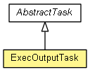

org.waarp.openr66.context.task
Class ExecOutputTask
java.lang.Object
 org.waarp.openr66.context.task.AbstractTask
org.waarp.openr66.context.task.ExecOutputTask
org.waarp.openr66.context.task.AbstractTask
org.waarp.openr66.context.task.ExecOutputTask
- All Implemented Interfaces:
- Runnable
public class ExecOutputTask
- extends AbstractTask

Execute an external command and Use the output if an error occurs.
The output is ignored if the command has a correct status.
In case of error, if the output finishes with NEWFINALNAME:xxx then this part is removed from the output
and the xxx is used as the last valid name for the file (meaning the file was moved or renamed even in case of error)
waitForValidation (#NOWAIT#) must not be set since it will prevent to have the feedback in case
of error. So it is ignored.
- Author:
- Frederic Bregier
|
Field Summary |
static String |
DELIMITER
In the final line output, the filename must prefixed by the following field |
| Fields inherited from class org.waarp.openr66.context.task.AbstractTask |
ARCHPATH, BLOCKSIZE, CPTLIMIT, DATE, ERRORCODE, ERRORMSG, ERRORSTRCODE, FILESIZE, FULLTRANSFERID, HOMEPATH, HOUR, INPATH, LOCALEXEC, LOCALHOST, LOCALHOSTADDR, NOWAIT, ORIGINALFILENAME, ORIGINALFULLPATH, OUTPATH, RANKTRANSFER, REMOTEHOST, REMOTEHOSTADDR, REQUESTEDHOST, REQUESTERHOST, RULE, TRANSFERID, TRUEFILENAME, TRUEFULLPATH, WORKPATH |
|
Method Summary |
void |
run()
This is the only interface to execute an operator. |
| Methods inherited from class java.lang.Object |
clone, equals, finalize, getClass, hashCode, notify, notifyAll, toString, wait, wait, wait |
DELIMITER
public static final String DELIMITER
- In the final line output, the filename must prefixed by the following field
- See Also:
- Constant Field Values
ExecOutputTask
public ExecOutputTask(String argRule,
int delay,
String argTransfer,
R66Session session)
- Parameters:
argRule - delay - argTransfer - session -
run
public void run()
- Description copied from class:
AbstractTask
- This is the only interface to execute an operator.
- Specified by:
run in interface Runnable- Specified by:
run in class AbstractTask
Copyright © 2009-2013 Waarp. All Rights Reserved.